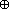
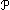

Anhang zu: LOGIK UND MENGENLEHRE
WEITERE LOGISCHE OPERATOREN?
Über die Wahrheitstafel können wir jeden binären logischen Operator (aus 16 möglichen) so charakterisieren
| a | b | a OP b |
| 0 | 0 | x1 |
| 0 | 1 | x2 |
| 1 | 0 | x3 |
| 1 | 1 | x4 |
bzw. mit NICHT, UND, ODER zusammenbauen:
a OP b = [(a ∧ b) ∧ x1] ∨ [(a ∧ b) ∧ x2] ∨ [(a ∧ b) ∧ x3] ∨ [(a ∧ b) ∧ x4]
Eigene Symbole/Sprechweisen gibt es inbesondere für:
a
 b := a ∨ b … wenn a, dann b (Implikation)
b := a ∨ b … wenn a, dann b (Implikation)a
 b := (a ∧ b) ∨ (a ∧ b) … wenn und nur wenn a, dann b (Äquivalenz)
b := (a ∧ b) ∨ (a ∧ b) … wenn und nur wenn a, dann b (Äquivalenz)a  b := (a ∧ b) ∨ (a ∧ b) … entweder a oder b (eXklusives OdeR)
Beispiel:
A heißt Teilmenge von B, wenn für alle x gilt: x
 Ax B. Warum ist jetzt die leere Menge Teilmenge jeder anderen Menge?
Ax B. Warum ist jetzt die leere Menge Teilmenge jeder anderen Menge?BOOLESCHE ALGEBRA
Wenn wir – wie im Skriptum angesprochen – Operatoren/Operanden ihre konkrete Bedeutung nehmen, müssen wir ihre Eigenschaften als gegeben voraussetzen, weil sie nicht mehr nachprüfbar sind. In der axiomatischen Mathematik setzen wir so wenig Eigenschaften wie möglich (Axiome) voraus und leiten alle übrigen Regeln daraus ab.
Eine Menge A samt Operatoren ,
 : AxA
: AxA  A heißt boolesche Algebra, wenn gilt:
A heißt boolesche Algebra, wenn gilt:
(1) und sind kommutativ.
sind kommutativ.
(2) und sind zueinander distributiv.
sind zueinander distributiv.
(3) Es gibt n, n A derart, dass für alle a A: a n = a (= n a) und a n = a (= n a)
A derart, dass für alle a A: a n = a (= n a) und a n = a (= n a)
(4) Zu jedem a A gibt es ein a A derart, dass: a a = n (= a a) und a a = n (= a a)
A gibt es ein a A derart, dass: a a = n (= a a) und a a = n (= a a)Aus der Symmetrie der Axiome folgt, dass man in jeder daraus abgeleiteten Aussage nur
 und n n ersetzen muss, um eine "duale" Aussage zu erhalten, die ebenfalls wahr ist. Dass das neutrale Element eines Operators eindeutig ist, folgt daraus, dass zwei solche zusammengerechnet das eine und das andere ergeben müssen. Schwerer nachzuweisen ist die …
und n n ersetzen muss, um eine "duale" Aussage zu erhalten, die ebenfalls wahr ist. Dass das neutrale Element eines Operators eindeutig ist, folgt daraus, dass zwei solche zusammengerechnet das eine und das andere ergeben müssen. Schwerer nachzuweisen ist die …Satz 1: Eindeutigkeit des inversen Elements, d.h. jedes x
A, das sich zu einem a A wie a verhält, ist a.x =
n mit neutralem Verhalten
x n =
Inverse Elemente
x (a
a) =
Distributivgesetz (verteilen)
(x a)
(x a) =
x verhält sich wie a–
n
(x a) =
Inverse Elemente
(a a)
(x a) =
Distributivgesetz (herausheben)
(a
x) a =
x verhält sich wie a–
n a =
n mit neutralem Verhalten
a
Satz 2: Absorbierendes Verhalten der neutralen Elemente beim jeweils anderen Operator
a n
=
n mit neutralem Verhalten
(a n
) n =
Inverse Elemente
(a n
) (a a) =
Distributivgesetz (herausheben)
a (n
a) =
n mit neutralem Verhalten
a a =
Inverse Elemente
n
Satz 3: Idempotenz
a a =
n mit neutralem Verhalten
(a a)
n =
Inverse Elemente
(a a)
(a a) =
Distributivgesetz (herausheben)
a (a
a) =
Inverse Elemente
a n =
n mit neutralem Verhalten
a
Satz 4: Absorptionsgesetz
(a b)
a =
n mit neutralem Verhalten
(a b)
(a n) =
Distributivgesetz (herausheben)
a (b
n) =
n mit absorbierendem Verhalten (Satz 2)
a n =
n mit neutralem Verhalten
a
Satz 5: Assoziativgesetz
Jedes x
A ist im Hinblick auf ein a A in zwei Teile zerlegbar:(a
x) (a x) =
Distributivgesetz (herausheben)
(a a)
x =
Inverse Elemente
n
x =
n mit neutralem Verhalten
x
Gleichheit im a-Teil:
a
[(a b) c] =
Distributivgesetz (verteilen)
[a
(a b)] (a c) =
Absorptionsgesetz (Satz 4)
a (a
c) =
Absorptionsgesetz (Satz 4)
a
a
[a (b c)] =
Absorptionsgesetz (Satz 4)
a
Gleichheit im a-Teil:
a
[(a b) c] =
Distributivgesetz (verteilen)
[a
(a b)] (a c) =
Distributivgesetz (verteilen)
[(a
a) (a b)] (a c) =
Inverse Elemente
[n (a
b)] (a c) =
n mit neutralem Verhalten
(a
b) (a c) =
Distributivgesetz (herausheben)
a
(b c)a
[a (b c)] =
Distributivgesetz (verteilen)
(a
a) [a (b c)] =
Inverse Elemente
n [a
(b c)] =
n mit neutralem Verhalten
a
(b c)Satz 6: De Morgan'sches Gesetz, d.h. a
b ist inverses Element zu a b.(a b) [a
b] =
Distributivgesetz (verteilen)
[(a b) a]
[(a b) b] =
Kommutativgesetz
[(b a) a]
[(a b) b] =
Assoziativgesetz (Satz 5)
[b (a a)]
[a (b b)] =
Inverse Elemente
(b n
) (a n) =
n mit absorbierendem Verhalten (Satz 2)
n
n =
n mit neutralem Verhalten
n
[a b]
(a b) =
Distributivgesetz (verteilen)
[a
(a b)] [b (a b)] =
Kommutativgesetz
[a
(a b)] [b (b a)] =
Assoziativgesetz (Satz 5)
[(a
a) b] [(b b) a] =
Inverse Elemente
(n
b) (n a) =
n mit absorbierendem Verhalten (Satz 2)
n n =
n mit neutralem Verhalten
n
UNENDLICHE MÄCHTIGKEIT?
Zwei Mengen A und B heißen gleichmächtig, wenn es eine bijektive Abbildung A
B gibt (das ist eine Menge von Pfeilen derart, dass von jedem A-Element genau ein Pfeil wegführt und zu jedem B-Element genau ein Pfeil hinführt). A heißt mächtiger als B, wenn eine Teilmenge von A, aber nicht A selbst, gleichmächtig zu B ist.POTENZMENGE?
Die Potenzmenge einer Menge M ist die Menge all ihrer Teilmengen.
(M) := { A | A M }
Bei einer endlichen Menge M mit n Elementen können wir eine Teilmenge A durch Aufzählen ihrer Elemente charakterisieren. Im Hinblick auf die Frage nach der Mächtigkeit von (M) empfiehlt sich aber, die Elemente von M in einer festen Reihenfolge zu durchlaufen und mit 1 bzw. 0 anzugeben, ob sie zu A gehören oder nicht.
1
2
3
4
5
n

Bsp: A = {1, 3, 4}  (1, 0, 1, 1, 0,… 0)
(1, 0, 1, 1, 0,… 0)
(1, 0, 1, 1, 0,… 0)Damit entspricht (M) der Menge aller n-Tupel aus 1en und 0en und …
|(M)| = |{0,1}n| = 2n
Bei einer unendlichen Menge M reduziert sich das auf die Aussage, dass (M) mächtiger als M ist.
Zum Beweis gehen wir davon aus, dass jedem x
M ein A M zugeordnet wurde (x  A), und folgern, dass es kein x M mit
A), und folgern, dass es kein x M mitx
B := { x M | (x A) ∧ (x  A) }
A) }gibt, sonst hätten wir den Widerspruch, dass x
B genau dann wahr ist, wenn x B wahr ist.